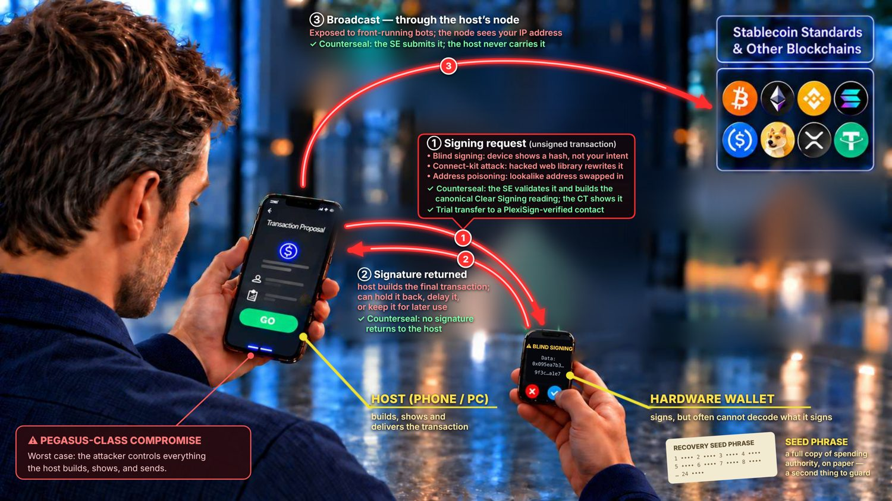

The wallet
A blockchain does the heavy work. A device in your hand shows the result and takes your decision. Your phone only proposes.
Your computer can be hacked. By itself, it still can't move your money.
In a traditional wallet, your phone or PC prepares the transaction, shows it to you, receives the signature back, and broadcasts it: sends it out to the public network, where it settles. One compromised device controls every step. Counterseal leaves it one job: to propose.


- Your phone proposesYou enter a payment in the wallet app. The app is treated as untrusted. It can ask. It cannot approve.
- A blockchain checks itWallet software running on the Internet Computer rebuilds the transaction, works out what it really does, and applies your limits and rules.
- You confirm on the deviceThe Counterseal Token hardware device shows the result on its own screen. You press its button to approve.
- The blockchain signs and broadcastsThe signature is produced on the Internet Computer, which broadcasts the transaction to the destination chain itself. It never returns to your phone.
The hardware wallet, done right.
Half of it is in your hand. The other half is a blockchain.
The Counterseal Token is slightly larger than a credit card. Its front is one screen and one button. The screen shows what the transaction does, in words. Holding the button is the only way to approve.
No seed phrase
There are no 12 or 24 words to write down, hide, lose or have stolen.
No private key to steal
The private key that controls your assets is never assembled in one place. It is not on the device, not on a server, not anywhere. Many independent machines each hold a share and sign together.
You hold the authority
Nothing is signed without your confirmation on your own device. If you lose the device, you recover with your second one. A recovery is announced, delayed, and can be stopped.
A traditional hardware wallet is limited to what fits on its small chip. That is why it so often shows a string of characters and asks you to trust your phone. The Counterseal Token has a blockchain behind it to do the heavy work, so the device only has to show you the answer and take your decision. New capability arrives as a governed software update on the blockchain, and the device in your hand stays simple.
See what you sign. Every time.
Approve what you cannot read
The device shows raw data. To know what it means, you have to believe the phone or web page, which is the thing an attacker changes.
Approve what it actually does
The transaction is decoded on the Internet Computer and checked against the contract's own code. The device displays the result on a screen your phone cannot write to.

Where the decoding happens matters. A hacked phone can decode a transaction falsely. A shared cloud service can be changed by an attacker. A small device has too little memory to decode complex transactions, and it should stay isolated from the network. So Counterseal decodes on a blockchain and displays on the device. Counterseal supports Clear Signing (the open ERC-7730 standard) on Ethereum-compatible chains, and applies the same full decoding on the other chains it supports.
No seed phrase. So where is the trick?
Every informed reader asks this. The answer is in six steps.
Still being designed. The means of recovery will include a second Counterseal Token, several independent authentication factors, and approval by people or devices you have chosen. The minimum set, the length of the delay, and what happens when every means is lost are not final. We will publish the full design.
If the service itself fails
This is a different question from losing a device. A standby copy of the wallet service is set up in advance. It takes over when conditions that can be checked objectively are met, such as the main service failing to respond for a set period. No person decides, no company has to act, and no bankruptcy can freeze it. From that moment the old service has no authority, so two services can never both sign.
Who runs it: no company is in the signing path.
On this site, "Counterseal" means the framework and the organization that governs it. The founding company is always written "Counterseal, Inc."
Nobody holds the key
The private key that controls the assets is never assembled. Its shares are held by independent machines of the Internet Computer. Counterseal, Inc. holds no share.
Only you can authorize
Nothing is signed without your confirmation on your own device. No company, node operator or governance vote can substitute for it.
Changes are public
The code is open. Before any subscriber's funds are admitted, control of the service is planned to pass to its token holders through on-chain governance. Every change then needs a public vote, with a period in which subscribers can leave.
What Counterseal, Inc. does
It develops and publishes the software and the device design, and offers a device as one manufacturer among possibly several. It does not operate the service and does not receive its fees.
Stated plainly: governance by token holders relocates trust, it does not remove it, and it is not presumed to be a shield against legal liability.